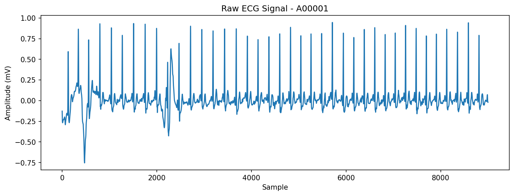
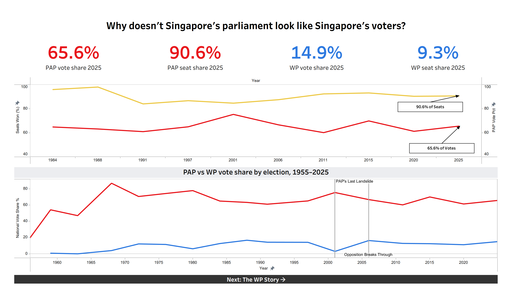
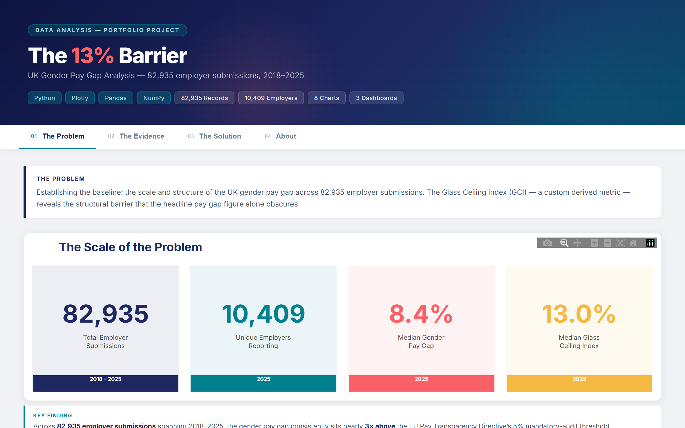

Projects
A selection of things I've built — web apps, data tools, and interactive dashboards.

Heartbeat or Noise?
Evaluating Consumer Wearables as Cardiac Screening Proxies
Cardiovascular disease causes 30.5% of all deaths in Singapore — yet 49% of residents haven't had a health checkup in the past year. Training ML classifiers on 8,500+ clinical ECG recordings to test whether consumer wearable signals can serve as a low-barrier screening proxy.
Extracted 3.78M Apple Watch records, cleaning ECG signals at 300Hz, building binary classifiers optimized for screening sensitivity.

JD-Match
Most job seekers don't know why their resumes get rejected by ATS filters. Built a tool that scores resume-to-job alignment across 15 categories, flags missing keywords, and generates rewritten bullet points — turning a manual, guesswork-heavy process into a one-click analysis.
Built full-stack app: React frontend, Node.js API, AI-powered keyword extraction and bullet rewriting.

Singapore Parliamentary Elections 1955–2025
Singapore's ruling party won 90.6% of seats with just 65.6% of the vote. Built a multi-dashboard Tableau story to quantify this votes-to-seats paradox across 70 years of elections and track the opposition's decades-long rise from 0 to 10 seats.
Collected 70 years of election data, designed multi-dashboard Tableau story with votes-to-seats paradox narrative.

Gender Pay Gap Analysis
Queried 10,000+ UK companies in BigQuery and found that women's representation drops 13 percentage points from entry-level to senior roles — a "glass ceiling" effect worst in Finance and nearly absent in Care. Built an interactive dashboard to let users explore the data by sector, year, and company size.
Queried 10K+ companies in BigQuery, built ETL pipeline, deployed interactive Plotly Dash dashboard.